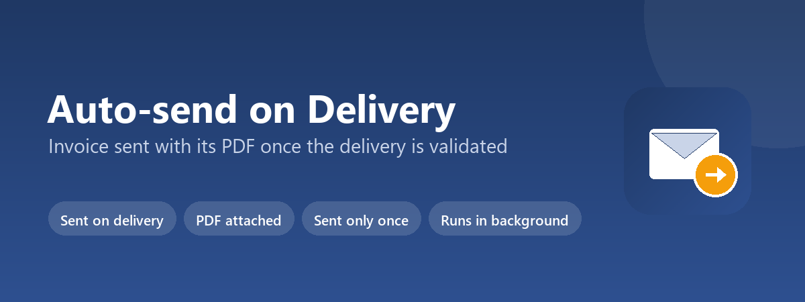

Send the customer invoice, with its PDF, automatically once the delivery is validated.
Switch it on per company in the Invoicing settings. When a delivery is validated, the posted invoices of its sales order go to the customer through Odoo's normal Send process, exactly as if you had clicked Send yourself. An invoice posted after the goods have left is sent as soon as it is posted.
🚚 Sent on deliveryValidating the outgoing delivery sends the posted customer invoices of its sales order. |
📄 Sent on postingWhen you invoice after the goods have left, the invoice is sent the moment it is posted. |
📎 PDF attachedThe standard invoice PDF, your email template and the customer's preferred sending method are used, and the invoice is marked as sent. |
✅ Sent only onceInvoices already sent by hand or by another automatic flow are left alone. |
Odoo 18.0 • Community & Enterprise • depends on Invoicing, Sales and Inventory • Licence LGPL-3
Odoo implementation and development. thecodelegion.com